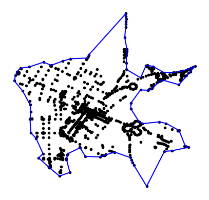
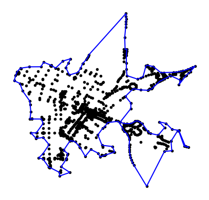

import json
from cdBoundary.boundary import ConcaveHull
ch = ConcaveHull()
with open('../examples/points-1k.json') as source:
pts = json.load(source)
ch.loadpoints(pts)
ch.calculatehull(tol=0.0025)cdBoundary
A very fast 2.5D concave hull algorithm by distance implemented in Python
A very fast 2.5D concave hull algorithm by distance implemented in Python.
Rather than using a factor between 0 and 1 as most Concave Hull or Alpha Shape algorithms this implementation uses maximum edge length (tol) as a paramater.
The library was needed specific for survey or LiDAR data for engineering applications.
Install
pip install cdBoundaryUsage
1. As a library
The points should be in list format with coordinate pairs:
[[x1, y1], [x2, y2], [x3, y3], ...] or
[[x1, y1, z1], [x2, y2, z2], [x3, y3, z3], ...]
All edge lengths exceeding tol parameter will be attempted to be removed. This parameter’s unit will thus be the same as your coordinates. Wether it is meters, feet or degrees.
The ../examples/points-1k.json dataset was borrowed with thanks from concaveman.
The result is a shapely Polygon at ch.hull.
print('Geometry type:', ch.hull.geom_type)
coords = ch.boundary_points()
print()
print('The first 5 coordinates of the concave hull is:')
for i in range(5):
print(i+1, '.', coords[i], sep='')Geometry type: Polygon
The first 5 coordinates of the concave hull is:
1.(-122.08441, 37.384634)
2.(-122.0832, 37.383161)
3.(-122.08214, 37.3812)
4.(-122.08204, 37.380184)
5.(-122.08216, 37.379173)ch.plot()
If there is an uncertianty on which value to use for tol the estimate function can be used to provide an estimate. The default percentile perc is 92.5%. At this value only outside border edges longer than 92.5% of all the edges will be attempted to be removed.
print('There is', len(coords), 'vertices on the current polygon.')
print('The suggested value to use is', round(ch.estimate(), 10))
ch.calculatehull(tol=ch.estimate())
print()
print('There is', len(ch.boundary_points()), 'vertices on the new polygon.')There is 83 vertices on the current polygon.
The suggested value to use is 0.0017366632
There is 164 vertices on the new polygon.The low value for the estimate() (much smaller than 1) suggest that the coordinates are in degress. When working in feet or meters it will be much larger.
ch.plot()
2. Working directly with files
Fiona is used to read point data directly from files. The resulting Polygon can also be written to the file format supported by Fiona.
from cdBoundary.fileio import FileIO
fch = FileIO()
fch.file2points('../examples/Bandelierkop_survey.shp')
fch.write2file(tol=35)In the same folder as your input file there is now a file named concave_hull.shp (default) containing the concave hull as a polygon.
or
with open('../examples/points-1k.json') as source:
pts = json.load(source)
fch = FileIO()
fch.loadpoints(pts)
fch.calculatehull(tol=ch.estimate())
fch.write2file(outfile='../examples/concave_hull2.shp', driver='ESRI Shapefile')Documentation
Requirements / Dependencies
- shapely
- matplotlib
- numpy
- Fiona >= 1.9.4
Algorithm
This concave hull implementation is based on the algorithm developed by Duckham et al. (2008) in the paper “Efficient generation of simple polygons for characterizing the shape of a set of points in the plane”, available here.
Wish list
Possible features or enhancements in the future. Nothing planned. The library is already satisfactory for our speicific application.
Plot output for quick visualizationImplemented 15 July 2023Support an elevation (Z value) on the polygon verticesImplemented 15 July 2023- Support for holes
- cli (Command Line Interface)
- Provide as a QGIS Plugin
- Implement it as a Streamlit application
Similar Implementations
A lot of concave-hull and alpha-shape implementations on Github, but very few using maximum edge length as an argument.
- The greatest influence on cdBoundary is http://www.rotefabrik.free.fr/concave_hull which can be accessed through the OpenJUMP user interface.
- The
lasboundarycommand line program from LASTools is unfortunately proprierity but also edge length as an argument and is very powerful. - MacRoad, later HighRoad, an ancient road design and earthworks program. Still being used today but no longer actively maintained. It has a
Join Edge Pointsfunction which is a concave hull implementation already implemented in 1988. It has anestimatebutton which inspired theestimatefunction for cdBoundary. - jtsop from the JTS (Java Topology Suite) has got a
Construction.concaveHullByLenfunction as well.